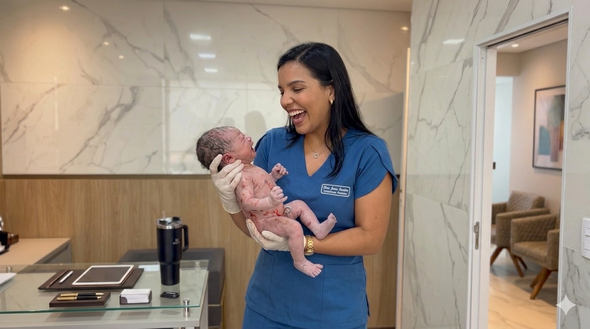

Atendimento humanizado em Goiânia, focado em ginecologia, obstetrícia de alto risco e bem-estar feminino em todas as fases da vida.
Acompanhamento preventivo, tratamento de SOP, endometriose e menopausa com abordagem humanizada.
Pré-natal personalizado e acompanhamento de gestação de alto risco, garantindo segurança para mãe e bebê.
Diagnóstico avançado e preciso para vulvovaginites recorrentes através de análise microscópica imediata.
A medicina não é apenas sobre protocolos, é sobre pessoas. Minha missão é oferecer um espaço de escuta ativa onde cada mulher se sinta protagonista de sua saúde.
Com formação sólida e atualização constante em Goiânia, foco na saúde baseada em evidências, integrando tecnologia diagnóstica com um atendimento sensível.
10+
Anos de Experiência
2k+
Vidas Acompanhadas

"A Dra. Olívia é maravilhosa! Me senti super acolhida desde a recepção. Ela explica tudo com muita paciência e clareza."
Mariana S.
"Profissional excelente e humana. A microscopia na hora fez toda a diferença no meu diagnóstico. Consultório lindo."
Carolina T.
"Nunca me senti tão confortável em uma consulta ginecológica. Um alívio encontrar uma médica assim."
Aline R.
Atendimentos particulares com emissão de recibo para pedido de reembolso no seu plano de saúde.
Sim, para orientações gerais e retornos que não dependam de exame físico imediato.